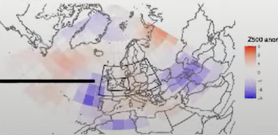
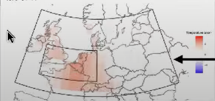
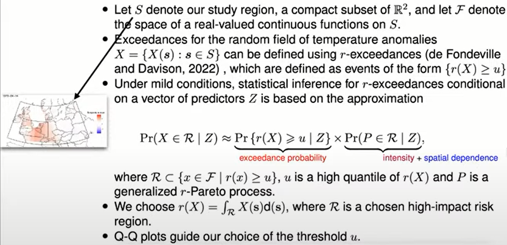

Uses a regional climate model has the advantage of producing physically and dynamically balanced data.
Limitations: A regional climate model requires considerable integration time and significant storage to produce high-resolution data and that the model outputs may include systematic errors
Statistical - Efficient methods that produce meteorological and climate data at a high resolution without the limitations of Dynamical models
Example: Extreme hot weather events in Western Europe-Atlantic region
Predict probability of an event (i.e. binary classification), intensity of event (ie regression), spatial dependence of events (i.e. spatial correlation)
Local land surface: soil moisture or snow cover determin surface energy budget (i.e. wet soil buffers heat)
Regional dynamic conditions: diabatic (clear skies), adiabatic warming (subsidence) or advection of warm air from anti-cyclonic circulation (atmospheric blocking)
Model
Response:
Extreme 2m daily temp anomalies over land
Predictors
Atmospheric blocking measured by variable, “Z500” (5-day avg)
Soil moisture, “SM” (15-day avg)
Resolution
There’s a predictor for each 5.6 x 5.6 degree (lat-lon) grid points
Shows the Western Europe-Atlantic region (disregard the horizontal black line)
There’s a response variable for each 1.3 x 0.3 degree (lat-lon) grid points
Study region, larger box, is a smaller subregion within the Western Europe-Atlantic region, and the Risk area is the smaller box
The response variable measurements are for the grid points in the study region
Model
Model has 3 components
Exceedence Probability is fit first. Then, its probabilities are used in the Marginal Extermal Intensity model. Then, both results are used to model the Spatial Dependence
Exceedence Probability: indicator response for whether temp has exceeded the threshold.
Fits a boosted tree with mean log loss
Marginal Extremal Intensity: uses a univariate loss function discussed at the beginning of the talk
ksi (shape?) is a hyperparameter along number of trees, m.
Spatial Dependence
Paper doesn’t come out until June or July, so will have to wait to see if there’s a package and to get further details
Feature importances will be the Z500 and SM for each of the geographical location variables. These feature importances can used to figure out weather patterns in those areas that were important to occurance of the high temperature event in the risk area.